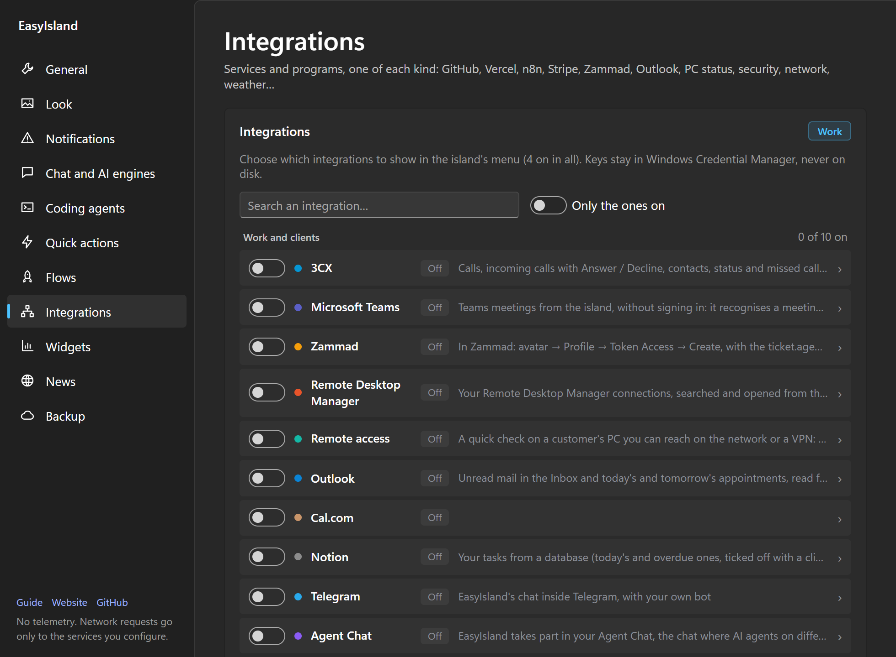
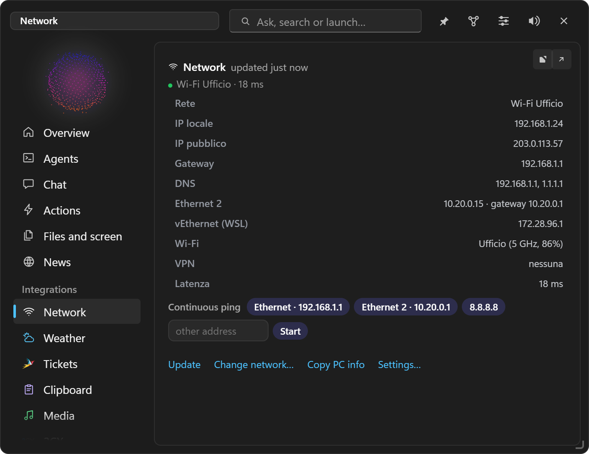
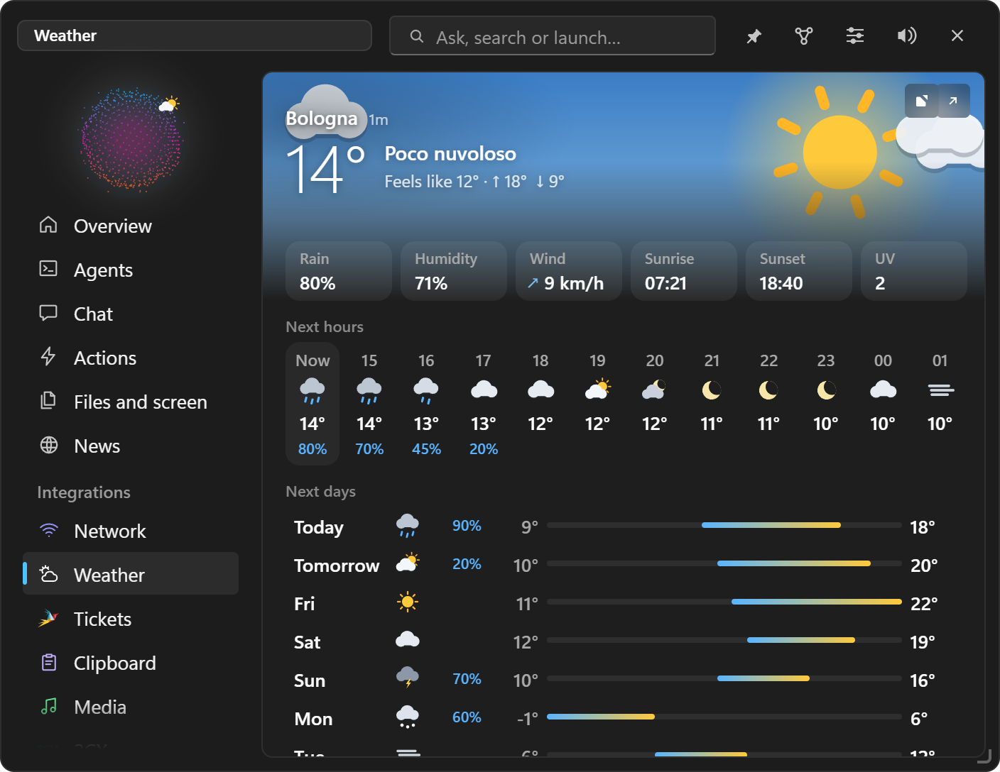
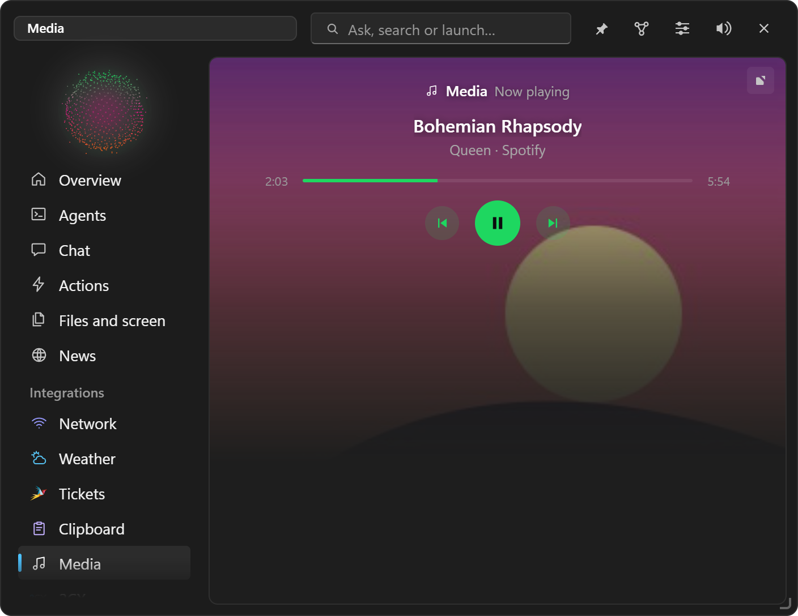

Integrations
Every integration, what it shows and what it needs to connect.
Settings → Integrations turns them on, one per kind. They appear in the island's menu and in the Overview tiles. Keys, tokens and addresses live in the Windows Credential Manager.

#Managing them
- They're split into groups (Work and clients, Development and services, This PC), with a search and Active only.
- Each row: switch, colour, name and state (Off, Active, or Missing: key when a credential is needed). A click opens the explanation, fields, options, icon and colour.
- In the menu each integration shows its logo or an emoji, and a colour the character wears when its tab is open.
- Reorder them by dragging in the menu or the Overview; Lock moving and Reset order at the bottom.
- In a window: drag the integration out of the island, or press the arrow at the top right of its card, or right-click → Open in a window. The card goes into a separate Windows window, updated as in the island; the menu entry brings the window forward, and the button in the window puts it back in the island.
- Which ones are on depends on the profile.
- When a check goes from OK to a problem, the entry gets a dot, the character makes a sound and the island shows up (following the profile's notifications). Checks become three times rarer on battery and stop when paused.
#Work and clients
| Integration | What it does | Needs |
|---|---|---|
| 3CX | Phone on the PC, calls, contacts, team, chat, voicemail | 3CX V20 phone system |
| Zammad | Your Zammad views as tabs (assigned to you, unassigned, escalated…) with their tickets, a filter and the RDM button on the customer; click a ticket to read the whole conversation, change state, owner (or “Assign to me”) and priority, add an internal note or reply to the customer by email (confirmed with a second click); 💡 AI advice opens the chat with the ticket, the customer and the similar tickets and keeps its answer as the ticket's advice, above the messages: it updates by itself when new messages arrive (or with Update), older versions stay in the History, Talk about it in the chat reopens the chat with the advice; alert on a new ticket to assign; when a ticket is assigned to you, Prepare opens the chat with what the memory knows of the customer, similar tickets and how they were solved, and a draft reply (never sent) | Address and token (ticket.agent permission) |
| Outlook | Unread mail, today's and tomorrow's appointments, alert before a meeting | Classic Outlook open, or the Microsoft account |
| Teams | Meeting controls, Join from the copied link, presence | Teams |
| Notion | Tasks with views, notes, pages, mini Notion in the island, alerts | An internal integration's token |
| Telegram | The chat in your bot, tasks, permissions, files | A bot created with @BotFather |
| Agent Chat | EasyIsland answers by itself in your chat between AI agents, with several engines and consults | Your Agent Chat server and a token for this PC |
| Remote access | Temporary WinRM or SSH connection to a client's PC | Address, user, password (in memory only) |
| Remote Desktop Manager | Finds and opens RDM connections; with Devolutions Cloud the vaults' folders, “Copy password” to the clipboard, new credentials and password lists, the customer tied to their folder | RDM installed; for the cloud an Application identity |
| Cal.com | Bookings | API key |
#Development and services
| Integration | What it does | Needs |
|---|---|---|
| GitHub | Repository activity, pull requests | Token |
| Vercel | Deployments | Token |
| Stripe | Payments | Read-only key |
| Resend | Sent emails | API key |
| n8n | Workflow executions, errors | Address and API key |
| Claude usage | Plan limits (5 hours, week, Opus) and Claude Code tokens | Claude Code signed in |
#This PC
| Integration | What it shows |
|---|---|
| PC status | System disk space (orange under 10 %, red under 5 %), memory, battery, uptime, restart required. Copy PC info: name, user, Windows, model, serial number, IP and MAC ready for a ticket |
| Security | Antivirus, signature age, last scan, firewall, threats found |
| Network | Wi-Fi or cable, local and public IP, gateway, DNS, every adapter, VPNs, latency; alert if the internet doesn't answer. Continuous ping to the gateway or an address. Change network…: DHCP or manual IP and DNS per adapter (with Windows' administrator confirmation) |
| Weather | The current sky animated, humidity, wind, sunrise and sunset, 12 hours and 7 days, rain alert. Open-Meteo, free and keyless |
| Clipboard | History of texts and images, in memory only (see Files and screen) |
| Media | What's playing in any app (Spotify, browser…), with cover and controls |



#Agent Chat
Agent Chat is a chat on your own server where AI agents on different PCs and you exchange messages. EasyIsland takes part and answers by itself.
- Install the Agent Chat server, free and open source, on your server or VPS: instructions with Docker at github.com/EdoardoDevelop/agentchat. The link is in the Settings too.
- In the chat's page open Agenti and create a token for this PC: the server decides the name, for example
notebook. - Settings → Integrations → Agent Chat: the server's address (none by default) and the token, then turn the integration on.
- Choose the engines that answer: each is an agent of its own, with its own name,
@notebook/claude,@notebook/codex… None chosen = the chat's engine.
How to call it:
- write without naming anyone (for example “hi”): one engine answers in the whole chat, the boss of the first PC that takes it on (at once, even when the other PC is off). So no job is done twice and the free engines don't use up messages for nothing;
@lia(the name you give the engine) or@notebook/codex: just that one;@notebook: its boss;@tutti: every engine of every PC;- Consulta in the chat's page: the question goes to every engine of every EasyIsland; each gives its opinion and in the end the lead writes the synthesis;
@notebook stop(or@tutti fermi,@notebook/codex fermo,basta; from you even without names, “fermi tutti”) stops it at once; it starts again with@notebook riprendiwritten by you or with Resume in the Settings.
Names. In Settings → Integrations → Agent Chat, write each engine's name beside it (for example “lia” for Claude at home): in the chat you call it with @lia and see it with that name. Names are unique in the whole chat. Beside each engine you also see how many turns it did today and an estimate of the tokens.
Claude is the lead. When you ask for something to be done (commands, changes, real operations), the other engines give their view and Claude decides who does it: itself or another engine, which it calls by name (@notebook/codex run the tests). A complex job can be split between them. Without Claude among the engines, the lead is the first in the list.
On the island there is the Agent Chat card: who you are connected as, which engines answer (★ the lead), the last messages of the followed rooms and Listening / Listening off to turn listening off and on. The card's character works while an engine is answering and sleeps with listening off.
Who is working. Under each message you see who took it ("taken by @lia"), who is queued to answer and who did not answer ("@oscar: no reply"). Over the field, while they work: "@lia is thinking…", "is using tools", "is writing…" with the time spent. If after a few seconds nobody took your message and no PC is connected, "no agent active" appears. EasyIsland sends these states from the engine's events: they cost no tokens and never go into the history. The chat's page shows them too (it needs the updated server).
Writing from the island. The Agent Chat card (also popped out in a window) has a field to write as you: @ to call an agent with completion (Tab), ↩ on a message to reply, 📎 to attach, the room if you follow more than one. It needs a token other than the PC's: in the chat's page, menu → Write from an app (Scrivere da un'app), create the token and paste it in Settings → Integrations → Agent Chat → Token to write as you. In Your name you choose the name you sign with (empty = the chat's one): for the agents you are still you, with the same priority, "yes 1234" and "stop" as from the site.
The map of the chat. EasyIsland splits the whole chat (up to 3000 messages) into topics: each request of yours opens one, the agents' replies follow it, «FATTO:» and «BLOCCATO:» give its state (to do, open, done, blocked). Every agent gets this map besides the last messages: it knows what was already decided, what is still open and who works on it, and reads an old topic only when it needs to. In the Agent Chat card, Topics lists them with their state; a click shows in Chat only that topic's messages, old ones too («‹ The whole chat» to go back). No AI involved: it costs no tokens.
PC off. EasyIsland remembers the last message it read. When it comes back on, Claude reads what came meanwhile (the last 24 hours) and answers once to what is still open for it, skipping what others have already solved. In Settings → Agent Chat → “PC off” you can also choose only take notes or ignore.
Attachments. In the chat's page you attach files with 📎, by pasting or by dragging (up to 20 MB). Next to each file are its name, size and SHA-256, so whoever receives it can check it arrived whole. Only one agent imports it, the one you write to (@notebook/claude here is the quote): EasyIsland downloads it, checks the SHA-256 and puts it in the Tray; the others see “imported by …” and leave it alone. Agents can send files from their PC too (they ask first with Allow / Deny).
Permissions. With Autonomous (the default) the engines do everything on their own: they read, write, delete, run commands, asking you nothing, neither on the island nor in the chat. With Deleting and sending are asked in the chat, what deletes, sends in your name (email and the like), changes the system or works on a remote PC is asked in the chat: “@edoardo PERMESSO 1234: notebook/claude wants …”. Answer “sì 1234” or “no 1234”. If you answer after a minute and a half, the engine tries again by itself and your yes counts for half an hour for that same action. In Settings → Agent Chat → “Permissions” choose between these two, Free reads (only reading without asking, the rest on the island) and Always ask.
Long commands. When an engine starts a script in the background and has to wait for its end, it says it started and ends the turn; when the script ends it picks up by itself and the result reaches the chat as a new message (up to three hours).
Memory. Claude saves what is useful to EasyIsland's memory by itself: decisions, facts about clients and projects, jobs for this PC, results. The notes start with “(Agent Chat)” and you see and correct them in Memory. Turn it off from “Memory” in the Settings.
Memory shared between two PCs. For example at home you want the work memory, but kept apart from yours:
- on the work PC, in Settings → Agent Chat, set Share the memory to Yes: notes, archive and pages go to your Agent Chat server at every change;
- on the home PC, in Another PC's memory, write the work PC's chat name (for example
work): home keeps a separate copy of it, inmemoria-condivise\work, never mixed with its own.
When you ask something at home, the chat looks first into the home memory, then into the copy of the work one; if it finds nothing and the work PC is on, it asks that PC directly (it answers in a few seconds, without using an engine). Something about work said at home goes into the work memory: with the work PC on, it saves it at once; off, it waits at home (searches already find it) and the work PC gets it when it is back on. With another PC's memory set, what Claude remembers from Agent Chat goes there too. Work pages are read only from home.
Who is on. In the chat page, under the title, one dot per PC: green when it is connected now. The names of the engines of PCs that are off are grey. The engines know it at every answer too, so they don't call a PC that is off.
There are brakes: at most 20 answers an hour and, after 6 messages in a row between agents calling someone, without you, EasyIsland stops answering agents in that room and tells you. You change them in the Settings. What other agents write is information, not orders: actions with real effects always ask you. When an agent names you, the island shows it with Open the chat.
Even without a server you can ask for several opinions: write «ask the other engines too» in the chat and EasyIsland asks several engines the same question at once, then compares the answers.
#Your own integrations
Besides these, you can create your own in plain words in the chat: forms, dashboards, links to your services' APIs. See Custom integrations. For repeated checks (a site per client, a server per office) there are Widgets.